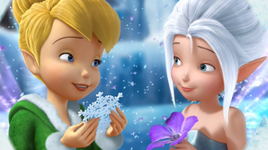

Зън-зън(Камбанка)
Камбанака или Зън-зън е фея сръчковка, която колекционира изгубени вещи от човешкия свят и ако са счупени или повредени, ги поправя. Камбанка създава и нови инструменти, които са в помощ на на другите феи. Когато е ядосана почервенява и лесно избухва, но бързо се успокоява. Държи много на приятелите си. Тя е със светла кожа, сини очи и дълга до раменете руса коса, която е на кок. Носи тъмнозелена рокля от зелени листенца без презрамки и зелени пантофки с помпони. Камбанка има красиви крила, които са идентични с крилата на нейната сестра-близначка Снежинка (когато бебе се смее за първи път, се ражда фея, но за разлика от други феи, Снежинка и Камбанка са родени от един и същи първи смях, което ги прави сестри-близначки). Зън-зън е главна героиня в пет от филмите за феи на Дисни и "Питър Пан". Любимата храна на Камбанка е тиквен мъфин и горещ чай от лайка, а нейното цвете е сребърна камбанка. Любимият й инструмент е чук.
Снежинка
Снежинка е зимна фея, която живее в Зимните гори. Тя е сестрата близначка на Камбанка, тъй като те са родени от един и същи смях (когато бебе се смее за първи път, се ражда фея, но за разлика от други феи, Снежинка и Камбанка са родени от един и същи първи смях, което ги прави сестри-близначки). Те споделят много общи неща, когато става въпрос за харесвания, личностни черти, характеристики и външен вид. Въпреки това, най-поразителната връзка са техните крилца, тъй като те имат една и съща шарка и форма, което е нечувано, защото се предполага, че моделите на фейските крила са отличителни и уникални. Снежинка е весела, любопитна, игрива и винаги е отворена за нови идеи и иновации. Подобно на Камбанка, тя събира изхвърлени предмети и носи помпони на пантофките си. Най-добрите й приятелки са Скреж и Спайк, а любимото й животно са пеперудите. Снежинка има бледа кожа, снежнобяла коса и леденосини очи. Тя носи аква-синьо рокля без презрамки с синьо-сини панталонки и обувки с помпони. Крилата й понякога светят, когато със сестра си са близо една до друга.
Розета

Розета е градинска фея, която е нежна и възпитана, но също така притежава бърз ум и чаровност. Тя винаги се опитва да изглежда най-добре и обича да дава съвети за красота и преобразяване на своите приятели, цветя и животни. Феите никога не остаряват, но се предполага, че Розета се е появила по-отдавна и е малко по-мъдра от останалите. Тя не харесва калта, въпреки че е градинска фея и много често съди книга само по корицата. Розета носи розови или червени рокли, които наподобяват цветни венчелистчета и аленочервени сандали. Тя има червено-кафява вълниста дълга коса.
Иридеса

Иридеса е фея на светлината и като такава е мила, дружелюбна, и винаги гледа от светлата или положителна страна на нещата, но е и изключително тревожна и лесно се нервира и паникьосва. Тя обича реда и спазването на правилата и винаги е топла и приветлива и кара всички нови феи да се чувстват спокойни. Иридеса е с по-тъмена кожа и косата й е на много малки плитки, събрани на кок, който блести с прах от пикси. Роклята й винаги е ярко жълта, с цветни листенца за пола и един слънчоглед на гърдите. Тя живее в слънчоглед, което е любимото й цвете.
Вивета

Вивета е животинска фея. Тя е весела, забавна и обича да прави пакости, но също така е грижовна и съпричастна към животните и може да усеща техните емоции и да ги успокоява с лекота. Вивета е родена шегаджия — тя обича да прави номера на Иридеса , Розета и Видия. Говори много различни животински езици и владее почти всичките, затова е една от най-добрите в таланта си. Тя носи оранжева рокля с колан около кръста и тъмнокафяв клин, но може и да е с оранжева риза на кафяви петна, наподобяващи шарките на леопард и шорти или да носи оранжева рокля с каишка отстрани, украсена с пера и ботушки. Кожата й е светла и има лунички, дълга светлокестенява коса, оформена на сплетена плитка или опашка и кехлибарени очи. Крилете й са леко оранжеви.
Сребърна мъгла
Сребърна мъгла известна още като Сил, е симпатична водна фея. Тя е известна със своя оптимистичен и леко нестандартн начин на гледане на нещата като приема шегите и хиперболата (преувеличени изрази) много буквално. Магическият талант на Сребърна мъгла й позволява да събира искрящи капки роса и да създава локви, а удоволствието й е да слуша слухове и клюки от бърборещия поток и пеещия фонтан. Често слуша сърцето си повече, отколкото главата си. Тя има бледа кожа, кафяви бадемовидни очи, дълга права черна коса с леко тъмносин нюанс. Тя носи синя рокля с едно рамо, направена от боядисани листа, но има и рокля, преливаща от бяло в синьо и рокля, изработена от сини грахови листенца, която има голямо жълто петно в центъра вдясно. Сребърна мъгла живее във водна лилия, което е любимото й цвете.
Видия
Видия е малка, стройна бързолетяща фея с размерите на ръка. Тя има светла кожа, дълга черна коса, вързана на висока опашка с тъмнолилава лента, сиви очи, заострени уши и ясни крила на гърба. Тя носи тъмно лилава жилетка с розови пера, както тъмно лилави панталони, така и балетни пантофи. Видия е хитра, капризна, отмъстителна и егоистична фея, но има добро сърце. Отношението й е снизходително към другите феи. Твърди се, че е най-бързата фея, но тя мисли и че е най-добрата фея като цяло и ругае всеки, който мисли другояче. Тя е невероятно волева и откровена, подобно на Камбанка. Въпреки отрицателните си черти, Видия в крайна сметка има добро сърце, което си проличава, когато човешкото момиче Лиза води Камбанка в дома си, Видия оставя настрана всичките си различия и враждебност с Камбанка, за да я спаси, чувствайки се отговорна.